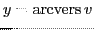
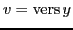
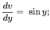
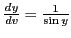
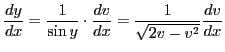
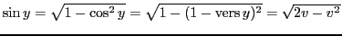
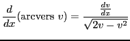

Let5.12
; then
.
Differentiating with respect to  by XVII,
by XVII,

therefore
, by (5.2). But since  is a function of
is a function of  , this may be substituted in the formula
, this may be substituted in the formula
 , by (5.1).giving
, by (5.1).giving

(since
, the plus sign of the radical being taken, since  is positive for all values of between 0 and
is positive for all values of between 0 and  inclusive).
Therefore,
inclusive).
Therefore,

(equation (XXIV) in §5.1 above).
david joyner
2008-08-11